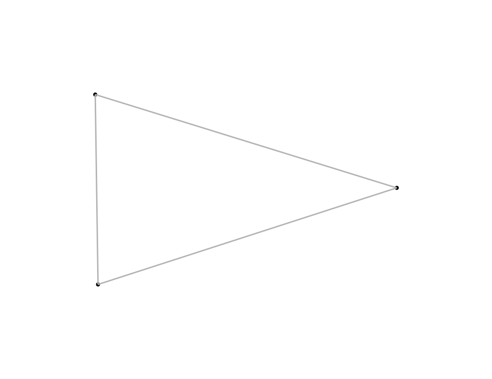

Positions nodes with a Fruchterman-Reingold force simulation
(igraph::layout_with_fr). Node table gains x/y; edge table gains
x, y, xend, yend.
Arguments
- plot
A
plotitobject holding graph data (created viaas_graph()+plotit()), or a bareplotit_graph.- iterations
Number of simulation steps.
- seed
Random seed; pass one for reproducible output.
- ...
Passed to igraph::layout_with_fr (e.g.
weights,area).
Value
A modified plotit object (pipeline form), or a new
plotit_graph when called on raw graph data.
Examples
e <- data.frame(source = c("a", "a", "b"), target = c("b", "c", "c"))
g <- as_graph(e) |> layout_force(seed = 1)
g$nodes
#> id x y
#> 1 a -0.4025036 0.3069924
#> 2 b -1.0921567 1.0286396
#> 3 c -0.1223654 1.2650731
as_graph(e) |>
plotit() |>
layout_force(seed = 1) |>
mark_point(data = ~nodes) |>
mark_rule(data = ~edges, colour = "grey70")
